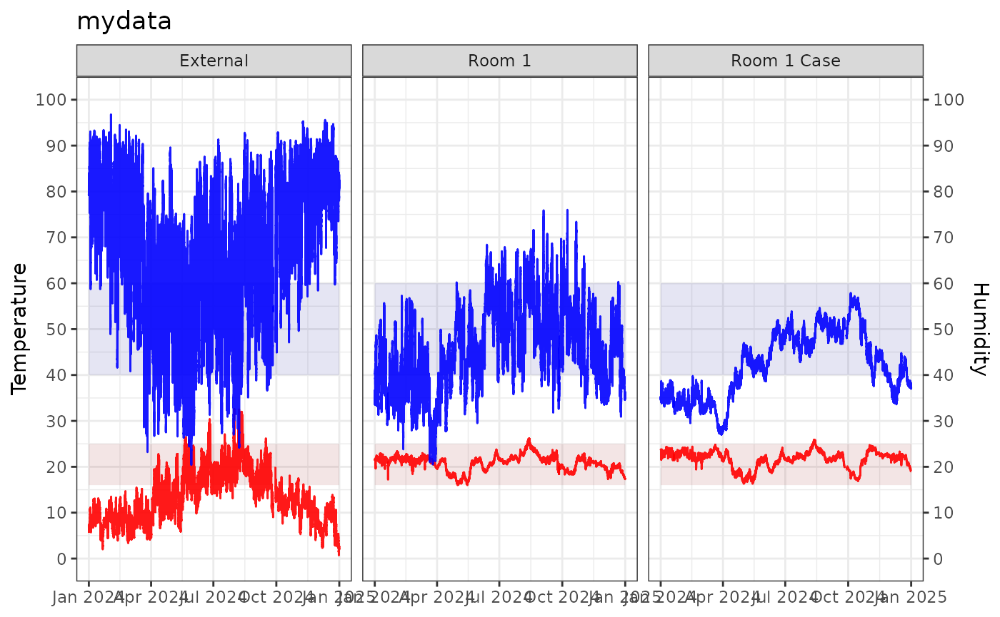

Datasets
mydata
This dataset contains environmental monitoring data collected from example heritage sites.
It includes measurements of temperature (°C) and relative humidity (%) recorded by sensors over time.
| Variable | Description |
|---|---|
| Site | Location name, e.g., “Museum”, “London” |
| Sensor | Identifier for the specific sensor |
| Date | Timestamp of the measurement (POSIXct format) |
| Temp | Air temperature in degrees Celsius |
| RH | Relative humidity as percentage (0-100%) |
Example usage to load the dataset from the package:
filepath <- data_file_path("mydata.xlsx")
mydata <- readxl::read_excel(filepath, sheet = "mydata") |> filter(Sensor == "Room 1")
head(mydata)
#> # A tibble: 6 × 5
#> Site Sensor Date Temp RH
#> <chr> <chr> <dttm> <dbl> <dbl>
#> 1 London Room 1 2024-01-01 00:00:00 21.8 36.8
#> 2 London Room 1 2024-01-01 00:15:00 21.8 36.7
#> 3 London Room 1 2024-01-01 00:29:59 21.8 36.6
#> 4 London Room 1 2024-01-01 00:44:59 21.7 36.6
#> 5 London Room 1 2024-01-01 00:59:59 21.7 36.5
#> 6 London Room 1 2024-01-01 01:14:59 21.7 36.2
mydata |> graph_TRH() + theme_bw() + labs(title = "Room 1", subtitle = "mydata")
TRHgrid: Dataset used to visualise the functions
This dataset consists of a grid of temperature and relative humidity values used to visualise function behavior. Temperatures range from 0°C to 100°C in 0.25°C increments, and relative humidity (RH) ranges from 0% to 100% in 1% increments. The complete factorial combination of temperature and RH values is created using expand.grid(), where each pair represents a unique condition.
Contour plots are generated to show interactions between derived variables across the temperature-RH grid. The dataset also supports validation checks for temperature and humidity calculations to understand relationships among the functions.
Example R code to generate the dataset:
Temp <- seq(0, 100, 0.25)
RH <- seq(0, 100, 1)
TRHgrid <-
expand.grid(Temp, RH) |>
tibble() |>
rename(Temp = Var1, RH = Var2)
summary(TRHgrid)
#> Temp RH
#> Min. : 0 Min. : 0
#> 1st Qu.: 25 1st Qu.: 25
#> Median : 50 Median : 50
#> Mean : 50 Mean : 50
#> 3rd Qu.: 75 3rd Qu.: 75
#> Max. :100 Max. :100Sustainability
# Changing Temperature
using_calcTemp <-
mydata |>
mutate(
# Absolute humidity, AH
AH = calcAH(Temp, RH),
# Dew point, DP
DP = calcDP(Temp, RH),
# Target RH
tRH = 50,
# T*: Tstar new temperature at target RH
Tstar = calcTemp(tRH, DP),
# Difference in measure temperature and new temperature
dTemp = Tstar - Temp,
# Check
Tcheck = Tstar - (Temp + dTemp),
# RHstarT: New humidity with new temperature
RHstarT = calcRH_DP(Tstar, DP),
# Error
RHerrorT = RHstarT - tRH
)
glimpse(using_calcTemp)
#> Rows: 35,136
#> Columns: 13
#> $ Site <chr> "London", "London", "London", "London", "London", "London", "…
#> $ Sensor <chr> "Room 1", "Room 1", "Room 1", "Room 1", "Room 1", "Room 1", "…
#> $ Date <dttm> 2024-01-01 00:00:00, 2024-01-01 00:15:00, 2024-01-01 00:29:5…
#> $ Temp <dbl> 21.8, 21.8, 21.8, 21.7, 21.7, 21.7, 21.7, 21.7, 21.7, 21.6, 2…
#> $ RH <dbl> 36.8, 36.7, 36.6, 36.6, 36.5, 36.2, 36.3, 36.4, 36.0, 36.0, 3…
#> $ AH <dbl> 7.052415, 7.033251, 7.014087, 6.973723, 6.954670, 6.897508, 6…
#> $ DP <dbl> 6.383970, 6.344456, 6.304848, 6.216205, 6.176529, 6.056922, 6…
#> $ tRH <dbl> 50, 50, 50, 50, 50, 50, 50, 50, 50, 50, 50, 50, 50, 50, 50, 5…
#> $ Tstar <dbl> 16.87424, 16.83134, 16.78833, 16.69208, 16.64899, 16.51913, 1…
#> $ dTemp <dbl> -4.925756, -4.968663, -5.011672, -5.007924, -5.051005, -5.180…
#> $ Tcheck <dbl> 0, 0, 0, 0, 0, 0, 0, 0, 0, 0, 0, 0, 0, 0, 0, 0, 0, 0, 0, 0, 0…
#> $ RHstarT <dbl> 50, 50, 50, 50, 50, 50, 50, 50, 50, 50, 50, 50, 50, 50, 50, 5…
#> $ RHerrorT <dbl> -7.105427e-15, 1.421085e-14, 1.421085e-14, 1.421085e-14, 0.00…
# Plot the difference and check the error
using_calcTemp |>
ggplot() +
geom_line(aes(Date, dTemp), col = "firebrick", alpha = 0.8) +
geom_line(aes(Date, RHerrorT), col = "goldenrod", alpha = 0.8) +
geom_smooth(aes(Date, dTemp)) +
labs(title = "Temperature Required to Achieve Target RH",
subtitle = "Positive values indicate increasing the temperature",
x = NULL, y = "Temperature (°C)") +
theme_bw()
using_calcTemp |>
graph_psychrometric(RH = "RHstarT", y_func = calcAH) +
labs(title = "Room 1 After Temperature Adjustment",
subtitle = "Temperature (°C)") +
theme_classic()Energy required to condition space by temperature control
using_calcTemp <-
using_calcTemp |>
mutate(
SensibleHeating = calcSensibleHeating(Temp, Tstar, RH, volumeFlowRate = 0.5),
CoolingPower = calcCoolingPower(Temp, Tstar, RH, tRH, volumeFlowRate = 0.5)
)
glimpse(using_calcTemp)
#> Rows: 35,136
#> Columns: 15
#> $ Site <chr> "London", "London", "London", "London", "London", "Lon…
#> $ Sensor <chr> "Room 1", "Room 1", "Room 1", "Room 1", "Room 1", "Roo…
#> $ Date <dttm> 2024-01-01 00:00:00, 2024-01-01 00:15:00, 2024-01-01 …
#> $ Temp <dbl> 21.8, 21.8, 21.8, 21.7, 21.7, 21.7, 21.7, 21.7, 21.7, …
#> $ RH <dbl> 36.8, 36.7, 36.6, 36.6, 36.5, 36.2, 36.3, 36.4, 36.0, …
#> $ AH <dbl> 7.052415, 7.033251, 7.014087, 6.973723, 6.954670, 6.89…
#> $ DP <dbl> 6.383970, 6.344456, 6.304848, 6.216205, 6.176529, 6.05…
#> $ tRH <dbl> 50, 50, 50, 50, 50, 50, 50, 50, 50, 50, 50, 50, 50, 50…
#> $ Tstar <dbl> 16.87424, 16.83134, 16.78833, 16.69208, 16.64899, 16.5…
#> $ dTemp <dbl> -4.925756, -4.968663, -5.011672, -5.007924, -5.051005,…
#> $ Tcheck <dbl> 0, 0, 0, 0, 0, 0, 0, 0, 0, 0, 0, 0, 0, 0, 0, 0, 0, 0, …
#> $ RHstarT <dbl> 50, 50, 50, 50, 50, 50, 50, 50, 50, 50, 50, 50, 50, 50…
#> $ RHerrorT <dbl> -7.105427e-15, 1.421085e-14, 1.421085e-14, 1.421085e-1…
#> $ SensibleHeating <dbl> -2.954468, -2.980233, -3.006059, -3.004896, -3.030775,…
#> $ CoolingPower <dbl> 0.003000743, 0.003026822, 0.003052963, 0.003051596, 0.…
using_calcTemp |>
filter(SensibleHeating > 0) |>
ggplot() +
geom_line(aes(Date, SensibleHeating), col = "deeppink") +
labs(x = NULL, y = "Sensible heat (kW)",
title = "Sensible Heating") +
theme_bw()
using_calcTemp |>
filter(CoolingPower > 0) |>
ggplot() +
geom_line(aes(Date, CoolingPower), col = "lightblue") +
labs(x = NULL, y = "Cooling power (kW)",
title = "Cooling Power") +
theme_bw()